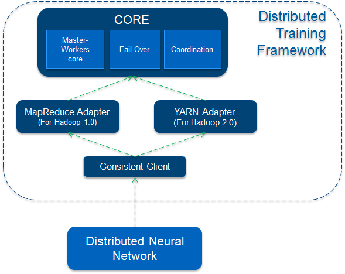

Architecture and Components

Overview
Four components in our system: Core, MapReduce-Adapter, YARN-Adapter, Consistent Client.
Core
Core is abstract layer for our distributed training framework, it can be used in any distributed resource management platform, such as YARN, Mesos, even in MapReduce.
It includes:
- Core interfaces defined such as MasterComputable, WorkerComputable.
- Core interceptor interfaces defined for user to do something before or after each iteration.
- Master-Workers implementation to run MasterComputable, WorkerComputable and interceptors.
- Fail-over implementation: It includes: master fail-over mechanism(recover to last checkpoint), worker-failover(checkpoint mechanism to recover to last successful checkpoint).
- Coordination implementation: How to determine each worker is done in one iteration? How to start a new iteration for all workers. Sync: Leverage ZooKeeper, using loop to wait for the notification znodes. Async: Leverage ZooKeeper, all server and workers are listeners for the specifiled znodes.
MapReduce Adapter
This component is used to make our distributed training work on Hadoop MapReduce model(especially in Hadoop 1 but works in all Hadoop version). Details are hidden to create a MapReduce Job, to determine one mapper as Master, other mappers as workers(Only mapper tasks) Guagua can launch distributed training on any platform to support Hadoop MapReduce model(Hadoop version 1 and version 2) This implemenatation is the default choice and tested on PayPal Hadoop cluster with a big data set about 1TB.
YARN Adapter
Compare with MapReduce Adapter, this component is to make our framework also work on YARN cluster. Details are hidden to create a Yarn application, to launch an AppMaster and to launch containers as master and workers. YARN Adater is still in beta version since no web-ui like MapReduce in YARN, not fully tested with a big data set.
Consistent Client
Users don’t need to care the real platform, consistent client will help to launch your Guagua application by choosing MapReduce or YARN adapter, even other platform in the future.